Психология личности — одно из ключевых направлений в сфере психологии, изучающее индивидуальные особенности, структуру личности и поведение человека. Для тех, кто хочет пройти обучение по психологии личности и получить профессиональную переподготовку, мы составили рейтинг программ, доступных в дистанционном формате. Современные дистанционные курсы включают теоретические знания, практическую подготовку и развитие профессиональных навыков. Студенты проходят учебные программы, изучают методы психологической диагностики, консультирования и психологического исследования. По окончании обучения слушателям выдается диплом, подтверждающий квалификацию в сфере практической психологии.
Информация обновлена:
ТОП онлайн-курсов обучения по психологии личности
- 🏆 Психологическое консультирование – Московский институт психологии (по промокоду kursy скидка 🎁 10%)
- 🏆 Психологическое консультирование и психологическая диагностика личности – НАДПО (по промокоду onlinekursy действует скидка 🎁 5%)
- 🏆 Психология личности – Психодемия (по промокоду OnlineKursy действует скидка 🎁 5000 руб)
- Психолог-консультант – Talentsy (по промокоду EDPART5 скидка 🎁 5%)
- Психология личности – МИПО (по промокоду onlinekursy действует скидка 🎁 10% )
- Психолог-консультант. Психологическое консультирование – Московская Бизнес Академия (по промокоду onlinekursy скидка 🎁 10%)
- Практический психолог – Институт Smart
- Психология личности – ИПО
- Психолог-консультант – MITM
- Психологическое консультирование и диагностика личности – НЦРДО (по промокоду onlinekursy действует скидка 🎁 5%)
- Психологическое консультирование и диагностика личности – ЦАППКК (по промокоду onlinekursy действует скидка 🎁 5%)
- Психология личности – АПОК
- Психология личности – ЭКОДПО
- Психология личности – Учебный центр «НЦПО»
- Психология личности – НАДПО (по промокоду onlinekursy действует скидка 🎁 5%)
- Психология личности – Инфоурок
Бесплатные курсы по обучению на специалиста психологии личности
- Бесплатный онлайн-курс по психологии личности – Онлайн Академия «Карьера в кармане»
Отличительные преимущества каждой дистанционной программы обучения по психологии личности
| № | Название курса и школы | Отличительные преимущества | |
|---|---|---|---|
| 🥇 | Психологическое консультирование – МИП | 644 часа практики и супервизий, Центр карьеры, Балинтовские группы, участие в профессиональном сообществе | Перейти |
| 🥈 | Психологическое консультирование и психологическая диагностика личности – НАДПО | Завершение от 4 месяцев, доступ к ЛитРес и БиблиоКлубу, ТОП-3 по качеству дистанционного обучения | Перейти |
| 🥉 | Психология личности – Психодемия | 2 диплома (магистр + проф.переподготовка), участие в научных проектах, преподаватели с публикациями в Nature | Перейти |
| 4 | Психолог-консультант – Talentsy | 2 диплома (РФ и MBA), 10 клиентов во время курса, практика с первого месяца | Перейти |
| 5 | Психология личности – МИПО | Индивидуальное менторское сопровождение, налоговый вычет, библиотека ЮРАЙТ | Перейти |
| 6 | Психолог-консультант. Психологическое консультирование – Московская Бизнес Академия | Финальный проект, воркшопы, поддержка резюме и портфолио | Перейти |
| 7 | Практический психолог – Smart | 1300 часов, живые сессии «вопрос-ответ», диплом РФ и MBA | Перейти |
| 8 | Психология личности – ИПО | Диплом гос.образца, кейсы, консультации, 620 часов, налоговый вычет | Перейти |
| 9 | Психолог-консультант – МИТУ | Киноклубы, супервизии, поддержка Telegram-чата, диплом РФ | Перейти |
| 10 | Психологическое консультирование и диагностика личности – НЦРДО | Стоимость от 992 ₽/мес, ЭБС + ЛитРес, гибкий график, диплом с ФРДО | Перейти |
| 11 | Психологическое консультирование и диагностика личности — ЦАППКК | Бессрочный доступ, помощь HR-наставника, диплом с госреестром | Перейти |
| 12 | Психология личности — АПОК | Доступ от 1 месяца, удобная подача, бесплатная доставка диплома | Перейти |
| 13 | Психология личности – ЭКОДПО | Срок от 1,5 месяцев, гибкий график, регистрация в ФИС ФРДО | Перейти |
| 14 | Психология личности – Учебный центр «НЦПО» | Модульная система, бессрочный доступ, обучение без набора групп | Перейти |
| 15 | Психология личности – НАДПО | Прохождение за 1 неделю, сертификат, насыщенная теория + практика | Перейти |
| 16 | Психология личности – Инфоурок | 5 часов, анализ агрессии, типологии личности, входит в подписку | Перейти |
1. 🏆 Психологическое консультирование – Московский институт психологии
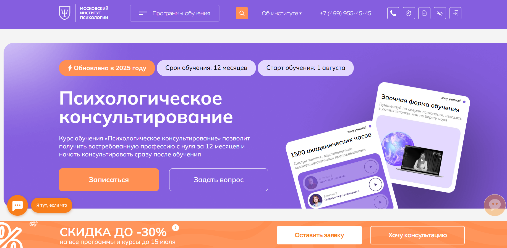
- ✅ Официальный сайт: mip.institute
- 💸 Цена обучения: от 180 000 ₽ в год (при оплате пакета «Лайт»).
- 💳 Рассрочка: от 15 000 ₽ в месяц, возможна беспроцентная оплата.
- 📚 Формат: дистанционное обучение, видеолекции, тексты, практические занятия, супервизии, интервизии, тесты, задания.
- ⏳ Продолжительность: 12 месяцев.
- 📜 Документ: диплом о профессиональной переподготовке с квалификацией «Психолог-консультант».
- 📝 Трудоустройство: выпускники могут начать частную практику, получить поддержку Центра карьеры.
- 🔷 Для кого подходит курс: для специалистов с высшим образованием и студентов старших курсов, желающих перейти в сферу психологии.
Особенности:
Программа обучения направлена на развитие практических навыков и профессиональных компетенций в области психологического консультирования. Все занятия проходят в дистанционном формате, что позволяет совмещать обучение с работой. Студенты проходят обучение на платформе с доступом к необходимым материалам, участвуют в вебинарах и практикумах. В рамках курса предусмотрены интервизии и Балинтовские группы, что помогает развивать профессиональную устойчивость и эмоциональную стабильность. Образовательный процесс строится по принципу «от теории к практике», обеспечивая глубокое понимание методов психологической помощи. После прохождения обучения выдается диплом установленного образца.
Чему учатся студенты:
- Оценке эмоционального состояния и диагностике личности
- Проведению индивидуальных и групповых консультаций
- Планированию и проведению онлайн и офлайн сессий
- Работе с тревогами, стрессами и семейными трудностями
- Интерпретации данных психологических тестов
- Разработке консультационных программ под запросы клиентов
Преподаватели:
- Рубцова Надя — практикующий психолог
- Додонова Ирина Викторовна — специалист в области практической психологии
- Сергачева Ксения Викторовна — психолог-консультант с опытом супервизий
Преимущества:
- Формат обучения позволяет совмещать с работой
- 644 часа практики и супервизий в пакете «Стандарт»
- Доступ к профессиональному сообществу выпускников и кураторов
- Участие в Центре карьеры и практики с регулярными мероприятиями
- Скидки до 30% при ранней оплате
- Поддержка наставников и куратора во время всего курса
- Выход на частную практику сразу после окончания курса
- Возможность вступить в профессиональные ассоциации
Отзывы учеников:
Слушатели отмечают большое количество практики, участие в профессиональных группах, удобный дистанционный формат. Среди плюсов также выделяют поддержку наставников, живое общение с преподавателями и возможность сразу применять знания в психологической практике.
Перейти на официальный сайт курса2. 🏆 Психологическое консультирование и психологическая диагностика личности – Национальная академия дополнительного профессионального образования
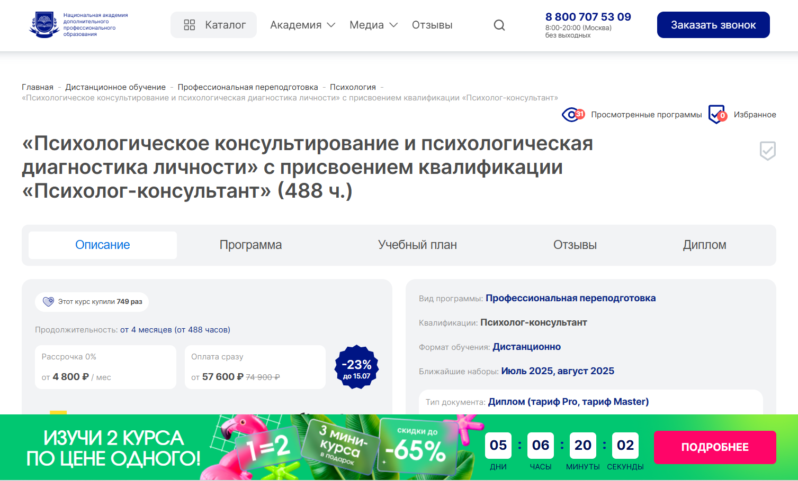
- ✅ Официальный сайт: nadpo.ru
- 💸 Цена: от 57 600 ₽ (действует скидка — 74 900 ₽ −23%)
- 💳 Рассрочка: от 4 800 ₽/мес, без процентов
- 📚 Формат: дистанционный формат — видеоуроки, тесты, домашние задания, практика
- ⏳ Продолжительность: от 4 месяцев (488 академических часов)
- 📜 Документ: диплом о профессиональной переподготовке (тариф Pro и Master)
- 📝 Трудоустройство: помощь в карьере — консультации с HR-наставником и предложения от партнёров
- 🔷 Для кого подходит курс: для тех, кто хочет пройти профессиональную переподготовку в сфере психологии и освоить дистанционные курсы без отрыва от работы
Особенности:
Курс реализуется в формате дистанционного образования, что позволяет совмещать обучение с профессиональной деятельностью. Образовательная программа включает более 30% практических занятий, направленных на развитие прикладных профессиональных навыков. Студенты получают доступ к библиотекам ЛитРес и Библиоклуб. Уже с начала прохождения обучения слушатели вовлекаются в психологическую практику, применяя теоретические знания на деле. Академия входит в ТОП-3 по качеству дистанционных программ, что подтверждает высокий уровень подготовки специалистов. После окончания курсов выдается диплом установленного образца, соответствующий требованиям ФГОС. Завершение обучения возможно за короткий срок — от 4 месяцев. Рассрочка без переплат делает курс доступным для широкой аудитории. Студенты получают поддержку преподавателей и кураторов на каждом этапе образовательного процесса.
Чему учатся студенты:
- Анализу индивидуальных особенностей личности
- Методам психологической диагностики
- Проведению психологического консультирования
- Применению теоретических знаний в реальной практике
- Формированию профессиональных навыков в сфере психологии
Преподаватели:
- Информация о преподавателях на сайте не представлена. Программу ведут опытные специалисты в области практической психологии и консультирования.
Преимущества:
- Соответствие образовательным стандартам и ФГОС
- Практическая направленность и раннее вовлечение в работу с клиентами
- Удобный дистанционный формат обучения
- Бесплатный доступ к профессиональным библиотекам
- Программа подходит для начала карьеры или смены профессионального направления
- Поддержка в трудоустройстве по окончании обучения
- Кешбэк и скидки на повторное обучение
- Прохождение курсов в удобное для студента время
Отзывы учеников:
Студенты отмечают доступность материалов и удобную платформу дистанционного обучения. Подчёркивают практическую ценность занятий и полезность постоянной связи с кураторами. Положительно оценивают возможность совмещать обучение с работой, а также помощь академии в карьерной реализации.
Перейти на официальный сайт курса3. 🏆 Психология личности – Психодемия
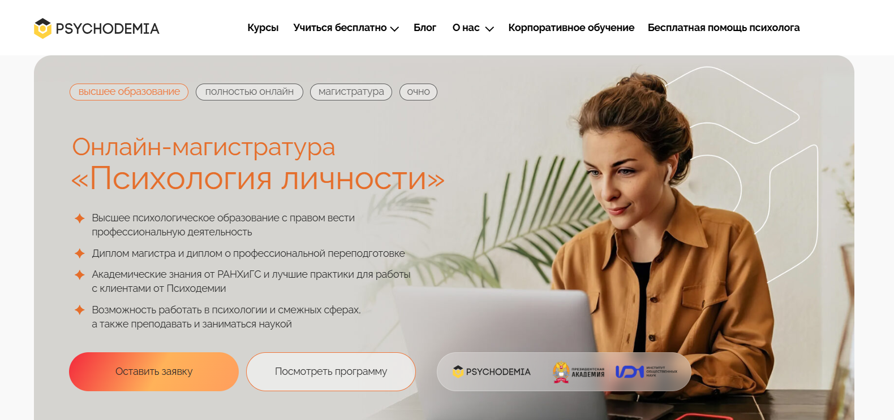
- ✅ Официальный сайт: psychodemia.ru
- 💸 Цена: 175 000 ₽ за семестр.
- 💳 Рассрочка: от 263 ₽ в месяц по образовательному кредиту с господдержкой.
- 📚 Формат: дистанционный формат — онлайн-занятия, лекции, семинары, практические задания, записи доступных курсов.
- ⏳ Продолжительность: 2 года / 4320 академических часов.
- 📜 Документ: диплом магистра государственного образца + диплом о профессиональной переподготовке.
- 📝 Трудоустройство: возможность работать в сфере психологии, преподавать, заниматься исследованиями и консультированием.
- 🔷 Для кого подходит курс: для тех, кто хочет пройти дистанционное обучение по практической психологии, получить диплом и применять знания в разных профессиональных сферах.
Особенности:
Образование проходит в дистанционном формате с возможностью совмещать обучение с работой. Программа разработана совместно Институтом общественных наук РАНХиГС и онлайн-институтом Психодемия. Слушателям доступны лекции от ведущих преподавателей, а также практические задания и психологическая практика в партнерских организациях. Дистанционное образование охватывает теоретические знания, методы психологической диагностики и консультирования, закрепляется через практику и живое общение на семинарах. Студенты участвуют в разработке собственных проектов и защищают магистерскую диссертацию очно. Обучение соответствует профессиональным стандартам и требованиям к подготовке специалистов в сфере психологии.
Чему учатся студенты:
- Работе в форматах: индивидуальное консультирование, коучинг, тренинги, групповые программы
- Методам психологического консультирования и диагностики
- Анализу и интерпретации индивидуальных особенностей личности
- Применению методов психологического исследования в практике
- Построению собственного карьерного трека
- Пониманию структуры личности и общих закономерностей формирования личности
Преподаватели:
- Агадуллина Елена — кандидат психологических наук, специалист по социальной психологии, автор публикаций в Science, PNAS, Nature Communication
Преимущества:
- Возможность пройти обучение в дистанционном формате из любой точки мира
- Выдаются два диплома: магистра и о профессиональной переподготовке
- Сильная академическая база от РАНХиГС и практический подход от Психодемии
- Включение практических заданий и семинаров в образовательный процесс
- Работа с реальными кейсами в рамках психологической практики
- Возможность применять знания в HR, маркетинге, образовании и других смежных сферах
- Образование соответствует профессиональным и образовательным стандартам 2025 года
- Поддержка студентов на всех этапах прохождения обучения
Отзывы учеников:
Студенты положительно отзываются о дистанционном обучении, выделяют практические занятия, актуальные учебные программы и возможность совмещать обучение с работой. Отмечают удобный формат, сильный преподавательский состав и качественные учебные материалы.
Перейти на официальный сайт курса4. Психолог-консультант – онлайн-университет Talentsy

- ✅ Официальный сайт: talentsy.ru
- 💸 Цена обучения: от 112 500 ₽ при оформлении гранта (скидка до 110 000 ₽).
- 💳 Рассрочка: доступна от 9 375 ₽/мес на 3, 6, 12 и 24 месяца, первый платёж через 2 месяца.
- 📚 Формат: дистанционный формат обучения — видеолекции, домашние задания, тесты, онлайн-практика, супервизии.
- ⏳ Продолжительность: 12 месяцев, 1200 часов программы, 450 часов практики.
- 📜 Документ: диплом установленного образца РФ и международный диплом MBA.
- 📝 Трудоустройство: предоставление 10 клиентов через платформу pomogayu.ru, поддержка карьерного старта.
- 🔷 Для кого подходит курс: для новичков без профильного образования и для тех, кто хочет сменить профессию.
Особенности:
Программа предлагает профессиональную переподготовку в дистанционном формате с глубоким погружением в практическую психологию. Подходит для тех, кто хочет совмещать обучение с работой и осваивать профессию в удобном темпе. Студенты проходят занятия с ведущими специалистами в сфере психологии и получают доступ к учебным материалам навсегда. Учебный процесс включает не только теоретические знания, но и обширную практику. Особое внимание уделяется развитию профессиональных навыков и работе с клиентскими запросами. Уже в процессе прохождения обучения слушатели начинают консультировать под супервизией. В рамках образовательных программ реализуется интегративный подход, позволяющий применять методы из разных направлений. Обучение соответствует профессиональным стандартам и требованиям к дополнительной профессиональной подготовке.
Чему учатся студенты:
- Проводить психологическое консультирование и диагностику состояния клиента
- Работать с тревогой, стрессом, выгоранием и проблемами самооценки
- Использовать 10 методов психологической практики в работе
- Развивать навыки ведения сессий и построения доверительных отношений
- Работать с возрастными и личностными кризисами
- Создавать личный бренд и привлекать клиентов
- Разбираться в индивидуальных особенностях личности
Преподаватели:
- Ольга Виндекер — практикующий психолог, член Российской Психотерапевтической Лиги, теле- и радиоведущая
- Инна Васильева — кандидат психологических наук, доцент, автор более 150 публикаций
- Ксения Кунникова — доктор наук, специалист по психологии интуиции, более 170 научных статей
- Елена Николаева — доктор биологических наук, профессор, заведующая кафедрой РГПУ им. Герцена
- Юлия Лебедева — клинический психолог, член Российского психологического общества
- Наталья Куделькина — педагогический психолог с опытом более 20 лет
- Рустам Муслумов — кандидат наук, доцент Уральского федерального университета
- Ярослав Коряков — психотерапевт, член Европейской конфедерации психоаналитической психотерапии
Преимущества:
- Возможность пройти обучение с нуля без профильного образования
- Дистанционное образование с доступом к платформе 24/7
- Выдается два диплома – российский и международный
- Практика с клиентами уже в процессе обучения
- Кураторы и эксперты сопровождают студентов на всем пути
- Профессиональные супервизии и демосессии
- Поддержка в трудоустройстве и выходе на частную практику
- Обучение соответствует образовательным стандартам РФ
Отзывы учеников:
Студенты отмечают высокий уровень преподавателей и насыщенную практику. Многие хвалят структуру дистанционного обучения и возможность совмещать его с работой. Особенно ценится доступ к психологической практике и реальным клиентам уже во время прохождения курсов. Также выделяют понятные учебные материалы и поддержку кураторов.
Перейти на официальный сайт курса5. Психология личности – Московский Институт Профессионального Образования
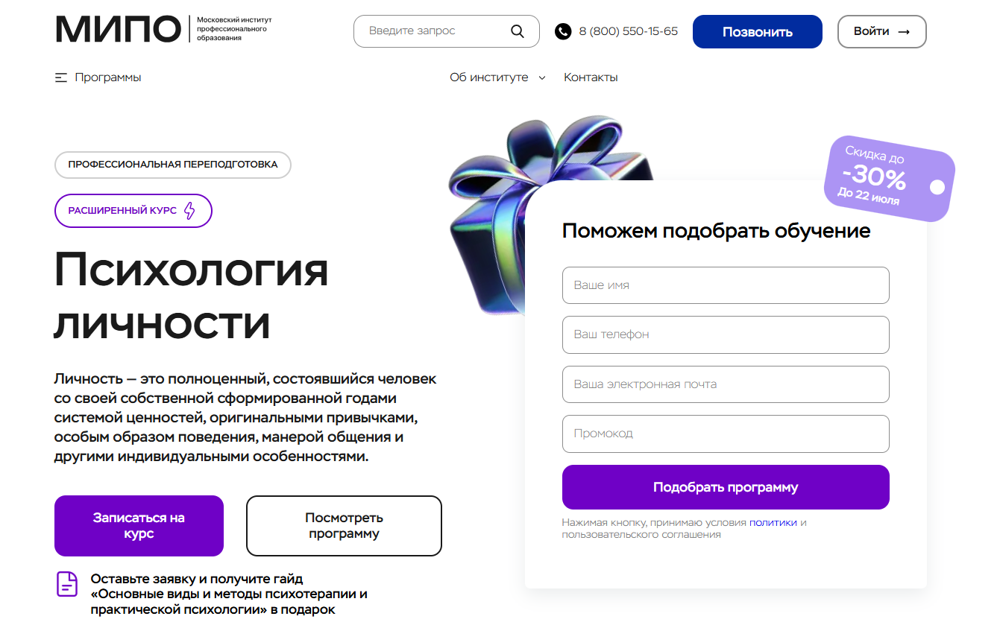
- ✅ Официальный сайт: mipo.msk.ru
- 💸 Цена: от 54 853 ₽ до 88 751 ₽ (со скидкой до 30%).
- 💳 Рассрочка: доступна до 24 месяцев, от 2 287 ₽/мес.
- 📚 Формат: дистанционные курсы, вебинары, видеоуроки, домашние задания, тесты, поддержка куратора, доступ к записям.
- ⏳ Продолжительность: 7 месяцев, 620 академических часов.
- 📜 Документ: диплом о профессиональной переподготовке установленного образца РФ (вносится в ФИС-ФРДО).
- 📝 Трудоустройство: поддержка центра развития карьеры, выпускники зарабатывают от 100 000 ₽.
- 🔷 Для кого подходит курс: для начинающих, желающих сменить профессию, подтвердить квалификацию и применять знания в личной жизни.
Особенности:
Программа по психологии личности проходит полностью в дистанционном формате с применением современных технологий. Курсы подходят для тех, кто хочет совмещать обучение с работой и проживает в любом регионе. В процессе обучения студенты получают доступ к записям вебинаров, практическим заданиям, индивидуальной поддержке куратора и экспертной обратной связи от преподавателей. Учащиеся не только изучают теоретические знания, но и проходят практическую подготовку, включая психологическое консультирование. Образовательный процесс выстроен по стандартам профессионального образования и завершится выдачей диплома о профессиональной переподготовке.
Чему учатся студенты:
- Понимать структуру и особенности личности
- Применять методы психологической диагностики
- Проводить психологическое консультирование
- Разбираться в возрастной, социальной и общей психологии
- Анализировать поведение и мотивы клиентов
- Использовать эмоциональный интеллект в практике
Преподаватели:
- Урывчикова Татьяна Геннадьевна — Член ассоциации когнитивно-поведенческой психотерапии, клинический психолог
- Перемолотова Ирина Александровна — Член международной ассоциации арт-терапевтов, коуч ICI
- Цяпало Анна — Член Ассоциации психоаналитического коучинга, сертифицированный сексотерапевт
- Миркина Елена — Президент фонда развития потенциала, клинический психолог
- Сальникова Дарья — Научный сотрудник РАО, специальный психолог
- Балобанов Василий — Автор методики «Семейный консультант», семейный психолог
Преимущества:
- Дистанционный формат обучения без привязки к месту
- Программа соответствует требованиям профессиональных стандартов
- Включает практические занятия и реальный опыт консультирования
- Возможность получить налоговый вычет 13%
- Доступ к дополнительным курсам и библиотеке ЮРАЙТ
- Индивидуальное сопровождение ментором и методистом
- Диплом признаётся в России и за рубежом
- Участие в вебинарах и профессиональных сообществах
Отзывы учеников:
Слушатели отмечают удобство дистанционного формата, насыщенность учебных программ, внимание со стороны кураторов и оперативную техническую поддержку. Особенно ценится практическая направленность курса и возможность совмещать обучение с работой или семьей.
Перейти на официальный сайт курса6. Психолог-консультант. Психологическое консультирование – Московская Бизнес Академия
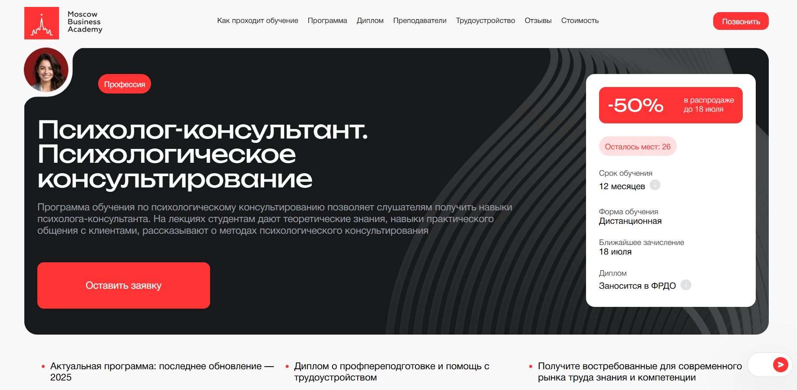
- ✅ Официальный сайт: moscow.mba
- 💸 Цена: от 116 496 ₽ со скидкой 50%
- 💳 Рассрочка: от 4 854 ₽/мес на 24 месяца, первый платёж — через месяц
- 📚 Формат: дистанционное обучение, видеолекции, тесты, практические задания, воркшопы, финальный проект
- ⏳ Продолжительность: 12 месяцев
- 📜 Документ: диплом о профессиональной переподготовке, сертификат, запись в ФРДО
- 📝 Трудоустройство: помощь в подготовке резюме, портфолио, прохождении собеседований и поиске вакансий
- 🔷 Для кого подходит курс: студенты, выпускники, специалисты социальной сферы и здравоохранения, желающие освоить дистанционные курсы по психологическому консультированию
Особенности:
Программа ориентирована на получение слушателями профессиональных навыков в области практической психологии. Курс создан с акцентом на методы психологической помощи, включая индивидуальные и групповые форматы консультирования. Обучение проходит в дистанционном формате, что позволяет совмещать его с работой и другими делами. Учебные материалы, практические занятия и обратная связь от преподавателей доступны через онлайн-платформу. Дистанционное образование позволяет студентам осваивать теоретические знания и применять их на практике. Актуальность содержания обеспечивается ежегодным обновлением программы. После окончания обучения выпускники получают диплом установленного образца и возможность продолжить развитие в профессиональной сфере. Курс соответствует современным образовательным стандартам.
Чему учатся студенты:
- Методам психологического консультирования
- Психологии личности и возрастной психологии
- Социальным и клиническим аспектам психологии
- Психодиагностике и проведению психологических исследований
- Работе с индивидуальными особенностями клиентов
- Групповому консультированию и арт-терапии
- Применению когнитивно-поведенческой и гештальт-терапии
- Проведению интервизий и супервизий
Преподаватели:
- Мария Егиазарова — выпускник МГУ, кафедра социальной психологии, бизнес-психолог, спикер
- Елена Дарменко — психолог-консультант с 20-летним опытом, специалист по нейромаркетингу
- Андрей Гунявин — практикующий психоаналитик
Преимущества:
- Обучение проходит в удобном дистанционном формате
- Доступ к материалам из любой точки мира
- Обновленная программа 2025 года
- Практические задания, приближенные к реальным кейсам
- Возможность совмещать учебу с работой
- Диплом с внесением в ФРДО
- Поддержка кураторов и обратная связь от преподавателей
- Реальная помощь с трудоустройством после окончания курса
Отзывы учеников:
Студенты часто отмечают высокий уровень преподавателей и простоту подачи материала. Среди плюсов — насыщенная практика, доступ к лекциям в любое время и помощь с трудоустройством. Многие прошли переподготовку и уже работают в психологических центрах и образовательных учреждениях.
Перейти на официальный сайт курса7. Практический психолог – Институт Smart
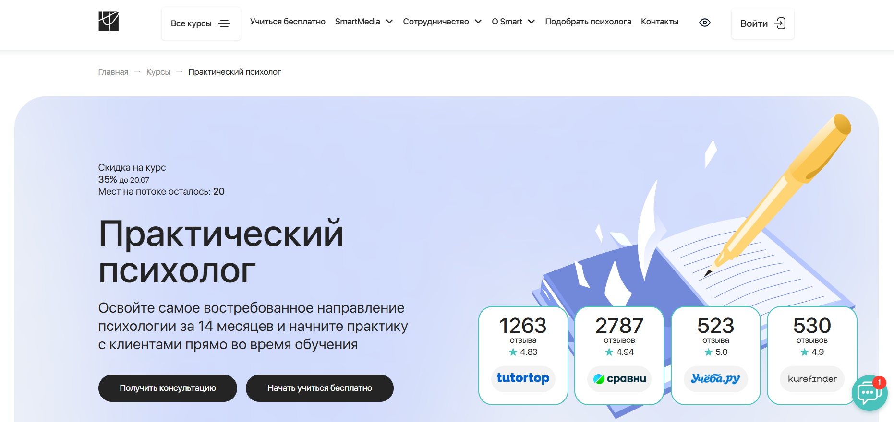
- ✅ Официальный сайт: smart-inc.ru
- 💸 Цена: от 117 456 ₽ (со скидкой 35% ).
- 💳 Рассрочка: от 9788 ₽/месяц до 24 месяцев, без переплат, первый платеж через месяц.
- 📚 Формат: дистанционное обучение: видеолекции, супервизии, кейсы, тесты, задания, онлайн-сессии.
- ⏳ Продолжительность: 14 месяцев, включая практическую часть и аттестацию.
- 📜 Документ: диплом о профессиональной переподготовке или диплом MBA (международный).
- 📝 Трудоустройство: доступ к карьерному центру, супервизии, предоставление клиентов, коуч-поддержка.
- 🔷 Для кого подходит курс: новичкам в психологии, педагогам, воспитателям, людям, планирующим сменить профессию или развить психологические навыки.
Особенности:
Программа обучения построена на практике и адаптирована под дистанционный формат. Курс включает 1300 часов, в том числе групповые супервизии, занятия в тройках, живые «вопрос-ответ» сессии и работу с реальными кейсами. Слушатели получают психологическую практику уже в процессе обучения. Студенты могут совмещать учебу с работой и семьей благодаря гибкому графику. После окончания курсов выпускники получают документы, признанные на государственном уровне и зарегистрированные в ФРДО. Предусмотрены дополнительные модули, коуч-встречи и менторское сопровождение. Центр карьеры помогает начать деятельность в профессиональной сфере без отрыва от процесса обучения.
Чему учатся студенты:
- Понимать и применять методы психологического консультирования
- Выстраивать доверительные отношения с клиентами
- Решать психологические проблемы личного и профессионального характера
- Использовать современные подходы в психологии личности
- Отрабатывать практические навыки в симулированных и реальных ситуациях
- Анализировать клиентские кейсы и давать качественную обратную связь
Преподаватели:
- Марина Сокольская — доктор психологических наук, профессор МИФИ, академик РАЕ, доцент ВАК, член РПО
- Светлана Варнавская — практикующий психолог, специалист с большим преподавательским стажем
Преимущества:
- Профессиональная переподготовка с выдачей диплома, признанного в РФ и за рубежом
- Гибкий дистанционный формат с доступом к материалам 24/7
- Поддержка кураторов, тьюторов и менторов на всех этапах прохождения курсов
- Возможность начать консультировать клиентов уже во время обучения
- Участие в сообществе Smart и дальнейшее профессиональное сопровождение
- Интерактивная образовательная платформа с практическими задачами
- Налоговый вычет 13% на стоимость обучения
- Доступ к бонусным лекциям и карьерной поддержке
Отзывы учеников:
Слушатели курса особенно выделяют качество дистанционного образования, насыщенность практических занятий и быструю обратную связь от кураторов. Отмечают возможность применять знания сразу и налаживать психологическую практику ещё до получения диплома. Хвалят поддержку преподавателей и удобство формата обучения.
Перейти на официальный сайт курса8. Психология личности – Институт Профессионального Образования
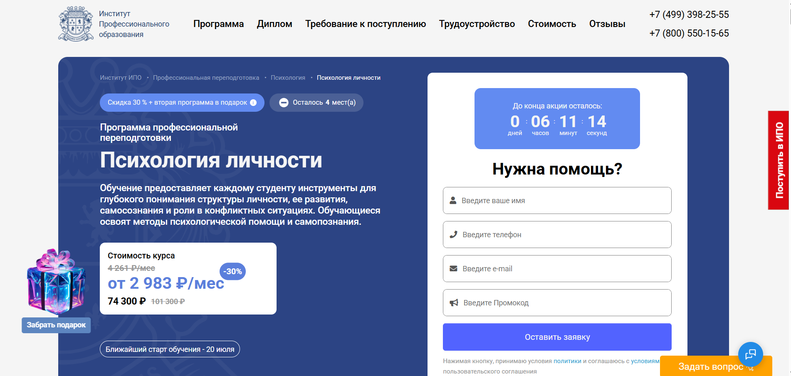
- ✅ Официальный сайт: ipo.msk.ru
- 💸 Цена: со скидкой 30% стоимость — 74 300 ₽ вместо 101 300 ₽.
- 💳 Рассрочка: от 2 983 ₽/мес доступна до 24 месяцев.
- 📚 Формат: дистанционный формат — видеолекции, тесты, практические задания, вебинары, онлайн-занятия, поддержка куратора.
- ⏳ Продолжительность: 7 месяцев / 620 часов.
- 📜 Документ: диплом о профессиональной переподготовке государственного образца.
- 📝 Трудоустройство: карьерные консультации, поддержка в составлении резюме и поиске вакансий, помощь в продвижении на рынке труда.
- 🔷 Для кого подходит курс: начинающим специалистам, практикующим психологам, педагогам, консультантам и соцработникам, желающим углубиться в психологическую практику.
Особенности:
Курс направлен на формирование профессиональных навыков в области практической психологии. В дистанционном формате студенты проходят обучение в гибком графике, совмещая изучение теоретических знаний и отработку практических навыков. Программа включает регулярные онлайн-встречи с опытными менторами, участие в кейс-методах и тренингах по психологическому консультированию. После окончания обучения выдается диплом, соответствующий государственным стандартам, с правом практиковать в профессиональной сфере. Возможность проходить обучение из любого региона делает курс удобным для слушателей с разным графиком. Программа актуальна в 2025 году, когда востребованность специалистов в сфере психологии личности продолжает расти.
Чему учатся студенты:
- Анализу индивидуальных особенностей и структуры личности
- Применению методов психологического исследования и консультирования
- Работе с личностными кризисами, самооценкой и внутренними конфликтами
- Пониманию мотивации, характера и жизненных сценариев
- Построению эффективной коммуникации с клиентом
- Использованию системных подходов в психологической практике
Преподаватели:
- Олеся Александровна Круглушина — психолог-консультант, семейный терапевт, преподаватель психологии, выпускница МГОУ
- Мария Андреевна Егиазарова — практикующий психолог и тренер
- Наталья Николаевна Бербер — кандидат психологических наук, профессиональный психолог
Преимущества:
- Возможность совмещать обучение с работой благодаря дистанционному формату
- Программа охватывает ключевые аспекты практической психологии
- Доступ к вебинарам и библиотеке ЮРАЙТ
- Карьерный центр помогает выпускникам выйти на рынок труда
- Бессрочный доступ к материалам курса
- Выдается диплом, подтверждающий право на ведение психологической практики
- Обратная связь от преподавателей и разбор реальных кейсов
- Дополнительные курсы в подарок для расширения компетенций
Отзывы учеников:
Слушатели отмечают высокий уровень дистанционного образования, актуальность учебных программ и поддержку преподавателей. В отзывах часто упоминаются полезные практические занятия, профессионализм кураторов и гибкость формата обучения. Особенно ценится возможность сразу применять полученные знания в психологическом консультировании и других направлениях психологии.
Перейти на официальный сайт курса9. Психолог-консультант – Московский институт технологий и управления
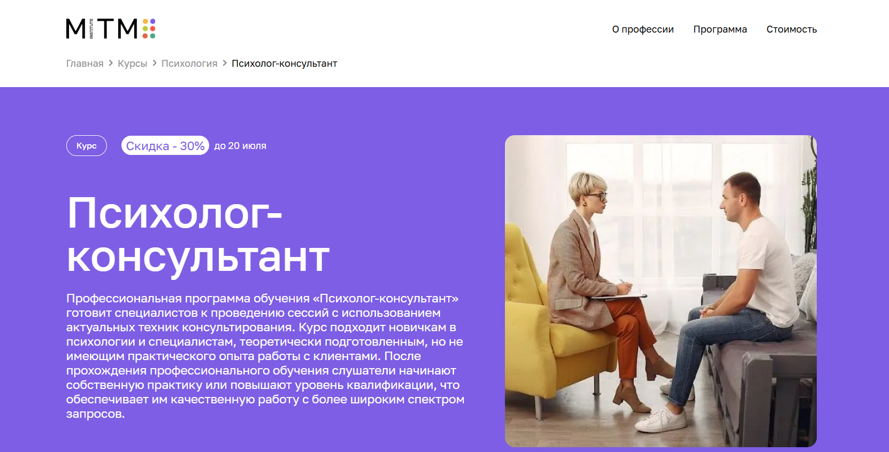
- ✅ Официальный сайт: mitm.institute
- 💸 Цена: 110 040 ₽ (со скидкой 30% )
- 💳 Рассрочка: 9 170 ₽ в месяц ,беспроцентная рассрочка на 12 месяцев
- 📚 Формат: дистанционный формат — видеоуроки, тесты, задания, практические занятия, вебинары с записями, супервизии
- ⏳ Продолжительность: 1 год (1500 часов)
- 📜 Документ: диплом о профессиональной переподготовке государственного образца
- 📝 Трудоустройство: программа содействия в трудоустройстве и построении карьерной траектории
- 🔷 Для кого подходит курс: для начинающих, действующих специалистов, учителей, социальных работников, желающих работать в сфере психологического консультирования
Особенности:
Образовательная программа ориентирована на развитие практических навыков в сфере психологического консультирования. Занятия проходят в дистанционном формате, что позволяет совмещать обучение с основной работой. Курс включает супервизии и киноклубы, где студенты анализируют психологические аспекты фильмов. Участники проходят путь от теоретических знаний до ведения реальных консультаций под руководством экспертов. После окончания обучения студенты получают диплом, соответствующий профессиональным стандартам. Весь процесс обучения сопровождается куратором. Система дистанционного образования включает доступ к материалам в любое удобное время. Также предоставляется налоговый вычет — возврат 13% от стоимости.
Чему учатся студенты:
- Ведению клиента на всех этапах консультирования
- Диагностике психоэмоционального состояния
- Работе с ПТСР, депрессией, утратой и возрастными кризисами
- Формированию доверительных отношений с клиентом
- Анализу запросов и выбору эффективной стратегии консультирования
- Использованию методов психологической диагностики и терапии
- Построению собственной практики в выбранной модальности
Преподаватели:
- Елена Айрапетян — интегративный психолог, член Ассоциации когнитивно-поведенческой психотерапии (АКПП), магистр психологии
- Анна Ермоленко — практикующий психолог, член АКПП, окончила МГППУ по направлению экстремальная психология
- Анна Селезнева — индивидуальный и семейный психолог, руководитель факультета психологии, продюсер образовательных курсов
Преимущества:
- Полностью дистанционный формат обучения с доступом из любой точки мира
- Актуальные программы, разработанные с учетом требований рынка
- Практико-ориентированный подход — большое количество практических занятий и супервизий
- Поддержка куратора на протяжении всего обучения
- Общение с менторами и студентами в Telegram-чате
- Гибкий график прохождения тем и сдачи заданий
- Возможность освоить несколько направлений консультирования
- Налоговый вычет 13% и возврат оплаты при отказе в течение первых двух недель
Отзывы учеников:
Студенты часто отмечают простоту дистанционного формата и удобство в совмещении с работой. Высоко оценивается обратная связь от преподавателей и супервизоров. Среди плюсов выделяют практическую направленность, актуальные методы психологической помощи, а также возможность применять знания в повседневной жизни и начать карьеру в сфере психологии.
Перейти на официальный сайт курса10. Психологическое консультирование и диагностика личности – Национальный центральный институт развития дополнительного образования
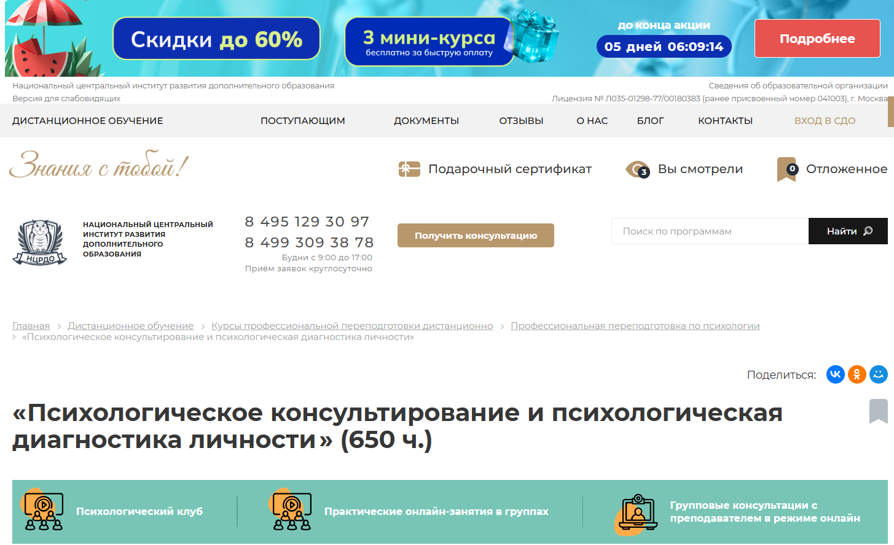
- ✅ Официальный сайт: ncrdo.ru
- 💸 Цена обучения: 35 700 ₽ (скидка , полная стоимость — 83 200 ₽).
- 💳 Рассрочка: от 2 975 ₽ в месяц на 36 месяцев, либо от института — по согласованию.
- 📚 Формат: дистанционное обучение: видеоуроки, лекции, вебинары, тесты, практические задания, методички, доступ к ЭБС и ЛитРес.
- ⏳ Продолжительность: 5 месяцев (650 часов).
- 📜 Документ: диплом о профессиональной переподготовке установленного образца с внесением данных в Федеральный реестр.
- 📝 Трудоустройство: доступ к HR-консультациям и поддержке выпускников в трудоустройстве.
- 🔷 Для кого подходит курс: для специалистов с высшим или средним профессиональным образованием, а также студентов старших курсов.
Особенности:
Программа ориентирована на тех, кто хочет пройти профессиональную переподготовку в дистанционном формате без отрыва от работы. Обучение адаптировано под слушателей с разным уровнем подготовки и расписанием. Курсы ведут преподаватели с практическим опытом в сфере психологии. Обучение проходит в системе дистанционного образования с доступом к электронным материалам. Дается возможность изучать материалы в удобное время, сдавать экзамены онлайн и участвовать в практических сессиях. Программа соответствует образовательным стандартам и завершение курса подтверждается официальным дипломом. В курсе реализованы подходы, направленные на развитие практических навыков консультирования и диагностики.
Чему учатся студенты:
- Проводить диагностику индивидуальных особенностей личности
- Применять современные методы психологического консультирования
- Вести личные и семейные консультации
- Анализировать психологические проблемы клиентов
- Разрабатывать планы психологической помощи
- Использовать онлайн-форматы консультирования
- Понимать принципы бизнес-консультирования
Преподаватели:
- Мельникова Елена Васильевна — опыт научно-практической деятельности с 2010 года
- Тышкевич Марина Юрьевна — опыт работы в психологии с 2006 года
- Шевченко Дария Игоревна — практикующий специалист с 2018 года
- Салихова Мария Романовна — опыт преподавания и практики с 2007 года
Преимущества:
- Обучение полностью онлайн и без привязки к месту
- Гибкий график, позволяющий совмещать с работой
- Практические задания и вебинары с обратной связью
- Доступ к учебным материалам и библиотекам 24/7
- Выдача диплома с гос. регистрацией
- Поддержка в трудоустройстве и карьерной адаптации
- Возможность повторной сдачи экзаменов без ограничений
- Развитие профессиональных и практических навыков
Отзывы учеников:
Слушатели часто отмечают высокий уровень организации дистанционного обучения, практическую направленность заданий и доступность преподавателей. Положительно оцениваются простота прохождения курса и полезность учебных материалов. Особенно выделяют возможность совмещать курс с основной работой и наличие реальных кейсов в процессе обучения.
Перейти на официальный сайт курса11. Психологическое консультирование и диагностика личности — Центральная академия профессиональной переподготовки и повышения квалификации кадров
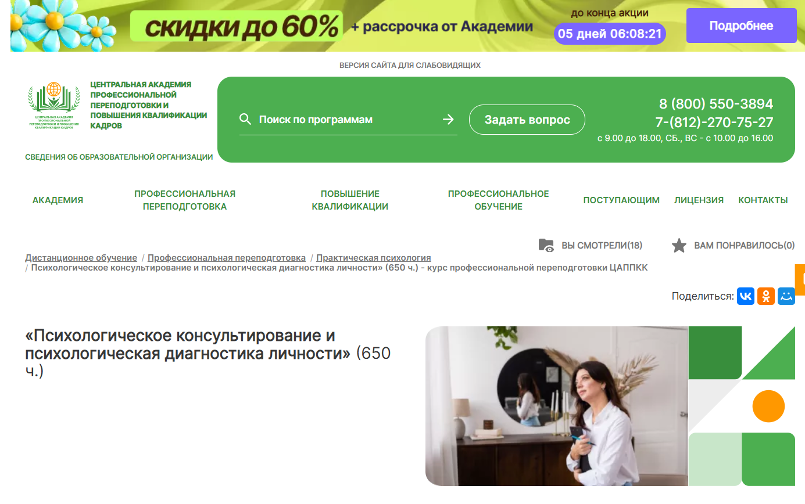
- ✅ Официальный сайт: appkk.ru
- 💸 Цена: 32 600 ₽ (со скидкой от полной стоимости 47 300 ₽)
- 💳 Рассрочка: от 906 ₽/мес. на 36 месяцев, без переплат
- 📚 Формат: дистанционный формат обучения — лекции, тесты, практические задания, доступ к вебинарам и библиотеке
- ⏳ Продолжительность: 5 месяцев (650 часов)
- 📜 Документ: диплом о профессиональной переподготовке, внесённый в реестр ФИС ФРДО
- 📝 Трудоустройство: помощь HR-наставника — консультации, резюме, подбор вакансий, сопровождение
- 🔷 Для кого подходит курс: слушателям с высшим или средне-профессиональным образованием, студентам профильных направлений
Особенности:
Курс организован в формате дистанционного образования, что позволяет совмещать процесс обучения с работой или другой занятостью. Все учебные материалы доступны круглосуточно, а задания можно выполнять в удобное время. Программа соответствует образовательным стандартам и обеспечивает качественную подготовку в области психологического консультирования. Документы об окончании обучения вносятся в государственный реестр, а доступ к курсу и вебинарам остается бессрочным. Слушатели получают поддержку от преподавателей и технической службы ежедневно с 9:00 до 21:00. Академия предлагает прозрачные условия оплаты и возможность обучения в рассрочку. После завершения курса выпускники получают помощь в трудоустройстве, включая составление резюме и подбор вакансий.
Чему учатся студенты:
- Методам психологической диагностики личности
- Психологическому консультированию в индивидуальном и групповом формате
- Проведению онлайн-сессий с клиентами
- Использованию современных подходов в практической психологии
- Работе с психологическими проблемами и внутренними состояниями клиента
- Применению теоретических знаний в реальной практике
Преподаватели:
- Анастасия Регнер — HR-наставник, бизнес-тренер, участник международных форумов, специалист по стратегическим коммуникациям
Преимущества:
- Бессрочный доступ ко всем материалам курса и вебинарам
- Обучение проводится в дистанционном формате с гибким графиком
- Диплом вносится в государственный реестр ФИС ФРДО
- Профессиональная поддержка после получения диплома
- Современные методы обучения с акцентом на практические навыки
- Бесплатный доступ к библиотеке «БиблиоКлуб»
- Возможность совмещать обучение с работой
- Техническая поддержка работает ежедневно, без выходных
Отзывы учеников:
Студенты часто отмечают высокое качество дистанционного обучения, удобный формат и наличие поддержки на каждом этапе. Многие положительно отзываются о доступности материалов, оперативной связи с преподавателями и реальной помощи в трудоустройстве после завершения обучения.
Перейти на официальный сайт курса12. Психология личности — Учебный центр АПОК
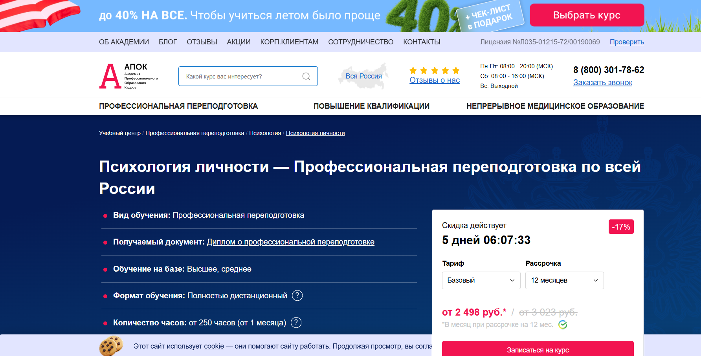
- ✅ Официальный сайт: apokdpo.ru
- 💸 Цена: от 29 980 ₽ (со скидкой 17% )
- 💳 Рассрочка: 2 498 ₽ в месяц беспроцентная на 6 или 12 месяцев
- 📚 Формат: полностью дистанционное обучение, видеолекции, тестирование, доступ к материалам через личный кабинет
- ⏳ Продолжительность: от 1 месяца, от 250 академических часов
- 📜 Документ: диплом о профессиональной переподготовке, регистрация в ФИС ФРДО
- 📝 Трудоустройство: возможность карьерного роста и применения в сфере психологии
- 🔷 Для кого подходит курс: для специалистов с высшим или средним образованием, планирующих работать в практической психологии или развивать профессиональные навыки в консультировании
Особенности:
Программа доступна для всех регионов России и полностью адаптирована под дистанционное образование. Студенты могут проходить обучение в удобном темпе, совмещая учебу с основной занятостью. Образовательный процесс соответствует государственным стандартам и предполагает глубокую проработку теоретических и практических аспектов психологической подготовки. Предусмотрена поддержка специалистов и быстрая доставка документов после окончания курсов. Курс можно пройти без предварительного опыта работы в сфере психологии, при этом он дает уверенное понимание методов психологической диагностики и консультирования. Все учебные материалы систематизированы и доступны онлайн. Обучение проходит через систему дистанционного обучения «АПОК Стади», зарегистрированную в реестре российского ПО. После завершения обучения документы доставляются бесплатно в любую точку страны.
Чему учатся студенты:
- Пониманию структуры и направленности личности
- Работе с мотивацией и индивидуальными особенностями
- Теориям личности в отечественной и зарубежной психологии
- Методам анализа и диагностики в психологической практике
- Психологическому консультированию и техникам взаимодействия с клиентами
Преподаватели:
- Информация о преподавателях на официальном сайте не представлена. Уточняйте у менеджеров центра АПОК.
Преимущества:
- Обучение без отрыва от работы — дистанционный формат
- Выдается диплом, признанный на всей территории РФ
- Индивидуальный подход и возможность коррекции учебного плана
- Гибкие сроки прохождения курсов и адаптация под график студента
- Поддержка менеджеров и методистов на всех этапах
- Регистрация в федеральной системе ФИС ФРДО
- Доступ к учебным материалам 24/7
- Бесплатная доставка дипломов почтой по всей стране
Отзывы учеников:
Студенты отмечают удобство дистанционного формата, четкость учебных программ и оперативность менеджеров. Многие подчеркивают возможность совмещать обучение с работой и отмечают простую подачу материала. Часто упоминаются реальные навыки, которые можно применить в психологической практике.
Перейти на официальный сайт курса13. Психология личности – ЭКОДПО
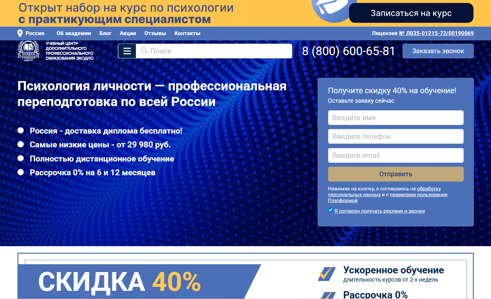
- ✅ Официальный сайт: ecodpo.ru
- 💸 Цена: от 29 980 ₽ (со скидкой 40%).
- 💳 Рассрочка: 2 498 ₽ в месяц, 0% на 6 или 12 месяцев через Сбер и Тинькофф.
- 📚 Формат: дистанционное обучение, доступ к материалам 24/7, тесты, итоговая аттестация, индивидуальные занятия (на VIP-тарифе).
- ⏳ Продолжительность: от 1,5 до 3 месяцев (252–555 академ. часов).
- 📜 Документ: диплом о профессиональной переподготовке установленного образца.
- 📝 Трудоустройство: диплом принимается всеми организациями РФ и аттестационными комиссиями.
- 🔷 Для кого подходит курс: для специалистов со средним профессиональным или высшим образованием, желающих освоить новую профессию или получить дополнительные знания в сфере психологии.
Особенности:
Программа проводится в дистанционном формате, что позволяет совмещать обучение с работой или личными делами. После зачисления студент получает доступ в личный кабинет и изучает материалы в удобное время. Нет вступительных испытаний, а сдача и пересдача экзаменов — бесплатна. Предусмотрена бесплатная доставка диплома по всей России. По окончании курсов все документы регистрируются в ФИС ФРДО. Образовательный процесс соответствует требованиям ФЗ №273. Возможна персонализация учебного плана под индивидуальные цели слушателя.
Чему учатся студенты:
- Пониманию структуры личности и этапов её формирования
- Методам психологического консультирования и психотерапии
- Анализу индивидуальных особенностей личности
- Диагностике психологических проблем с применением практических навыков
- Использованию современных методов психологического исследования
- Работе с клиентами в различных возрастных и социальных категориях
Преподаватели:
- Преподаватели – практикующие специалисты с опытом дистанционного обучения и ведения онлайн-занятий (ФИО не указаны на сайте)
Преимущества:
- Полностью дистанционный формат с круглосуточным доступом к материалам
- Сдача экзаменов и пересдач — бесплатно
- Персональная настройка учебной программы
- Официальный диплом с регистрацией в ФИС ФРДО
- Гибкий график и индивидуальный подход к обучению
- Возможность начать обучение сразу после подачи заявки
- Доставка диплома – бесплатно в любой город РФ
- Поддержка кураторов и преподавателей на всем протяжении обучения
Отзывы учеников:
В отзывах чаще всего выделяют доступность материала, быстрые сроки получения диплома, лояльные условия поступления и удобный формат дистанционных курсов. Многие хвалят поддержку менеджеров и быструю обратную связь во время прохождения обучения.
Перейти на официальный сайт курса14. Психология личности – Учебный центр «НЦПО»
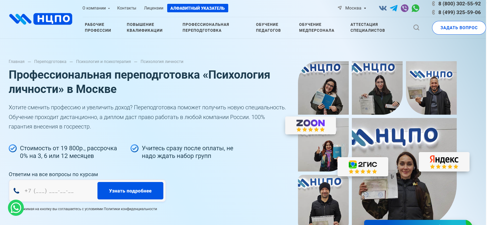
- ✅ Официальный сайт: ncpo.ru
- 💸 Цена: от 19 800 ₽ (скидка 3 000 ₽ при оплате в день заявки)
- 💳 Рассрочка: 0% на 3, 6 или 12 месяцев (от 1 650 ₽ в месяц)
- 📚 Формат: дистанционное обучение, доступ к платформе 24/7, лекции, тесты, практические задания, методические материалы
- ⏳ Продолжительность: от 250 до 1600 академических часов
- 📜 Документ: диплом о профессиональной переподготовке с внесением в госреестр ФРДО
- 📝 Трудоустройство: квалификация, соответствующая профстандарту, позволяет занимать новую должность
- 🔷 Для кого подходит курс: специалисты со средним специальным или высшим образованием, желающие сменить профессию или повысить доход
Особенности:
Программа реализуется полностью в дистанционном формате, позволяя совмещать обучение с работой. Студенты проходят курсы без набора групп и получают доступ сразу после оплаты. Образовательный процесс строится на модульной системе и охватывает как теоретические знания, так и практические навыки. Доступ к материалам сохраняется навсегда. Выдаваемый диплом подтверждает профессиональные компетенции и дает право работать в любой точке России. Учебный центр работает по лицензии Минобрнауки РФ, а договор с обучающимися содержит юридические гарантии.
Чему учатся студенты:
- Методам психологической диагностики и консультирования
- Принципам формирования личности и индивидуальных особенностей
- Проведению психологической практики в различных сферах
- Анализу психологических проблем и применению теорий личности
- Организации психологического сопровождения и помощи
Преподаватели:
- Терешков Александр Леонидович — генеральный директор УЦ «НЦПО»
- Грезнева Диана — преподаватель психологии
- Малкова Анна — специалист по практической психологии
Преимущества:
- Обучение на удобной онлайн-платформе с круглосуточным доступом
- Беспроцентная рассрочка без справок и поручителей
- Диплом с госрегистрацией, не указывается форма обучения
- Пакет документов отправляется бесплатно
- Можно учиться с нуля без предварительной подготовки
- Возможность получить практические навыки под руководством опытных преподавателей
- Работаем официально по лицензии Минобрнауки РФ
- Гарантированное внесение в государственный реестр
Отзывы учеников:
Студенты часто отмечают удобный дистанционный формат, оперативную поддержку, понятные учебные материалы и быстрое оформление документов. Отдельно подчеркивают простоту процесса обучения и полезность практической части. Также многие указывают, что диплом действительно помогает при трудоустройстве.
Перейти на официальный сайт курса15. Психология личности — Национальная академия дополнительного профессионального образования
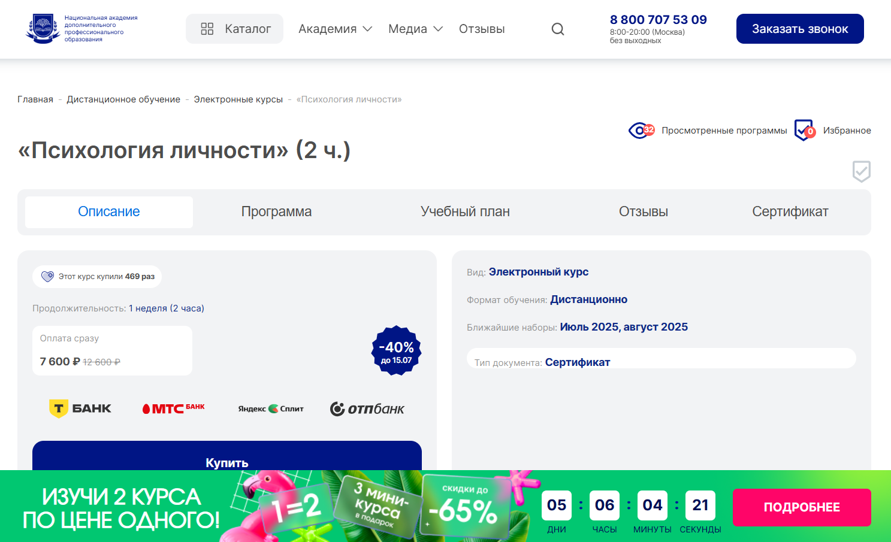
- ✅ Официальный сайт: nadpo.ru
- 💸 Цена: 7 600 ₽ (скидка 40%, ранее — 12 600 ₽)
- 💳 Рассрочка: не указана
- 📚 Формат: дистанционный формат — видеоматериалы, теория и практические задания
- ⏳ Продолжительность: 1 неделя (2 часа)
- 📜 Документ: сертификат о прохождении обучения
- 📝 Трудоустройство: курс повышает шансы на трудоустройство в сфере психологии и смежных специальностях
- 🔷 Для кого подходит курс: студентам, педагогам, практикующим психологам, а также всем, кто интересуется личностью и её развитием
Особенности:
Обучение проводится в дистанционном формате, что удобно для совмещения с работой или другими занятиями. Программа подходит как для начального, так и для продвинутого уровня. Слушатели получают базовые и прикладные знания о внутренней структуре личности и её проявлениях в жизни. Курс затрагивает методы психологической диагностики, теории личности и формирование индивидуальных особенностей. По окончании обучения выдается официальный сертификат. Программа соответствует требованиям образовательных стандартов и профессиональной подготовки. В рамках курса студенты осваивают не только теоретическую базу, но и получают практические навыки. Доступ к учебным материалам открыт на весь срок прохождения курсов. Образовательный процесс организован в удобном темпе — обучение можно пройти в любое время.
Чему учатся студенты:
- Изучают ключевые теории личности и структуры поведения
- Разбирают методы психологического анализа и диагностики
- Получают навыки применения знаний в психологической практике
- Узнают, как личностные черты влияют на взаимодействие и восприятие
- Формируют навыки консультирования и помощи в решении психологических проблем
Преподаватели:
- Тарасов Сергей Васильевич — кандидат психологических наук, доцент, стаж с 2000 года
- Егорова Наталья Николаевна — кандидат психологических наук, 22 года опыта
- Челнокова Ирина Александровна — кандидат психологических наук, член Российской ассоциации КПТ, стаж с 2008 года
- Санжапова Эльмира Викторовна — кандидат педагогических наук, доцент, стаж с 2005 года
Преимущества:
- Доступное дистанционное обучение без привязки к месту
- Краткий срок прохождения курса — всего 1 неделя
- Подходит для разных уровней подготовки
- Выдается официальный сертификат
- Курс помогает в расширении профессиональных навыков
- Актуален для специалистов, желающих повысить квалификацию
- Развивает практические навыки и аналитическое мышление
- Разработан с учетом современных требований к образованию
Отзывы учеников:
Студенты отмечают простоту подачи материала, доступность дистанционного формата и насыщенность курса полезной информацией. Большинство отзывов подчеркивают практическую направленность и актуальность знаний, которые можно применять в работе и личной жизни. Также высоко оценивается профессионализм преподавателей и удобство системы дистанционного обучения.
Перейти на официальный сайт курса16. Психология личности – Инфоурок
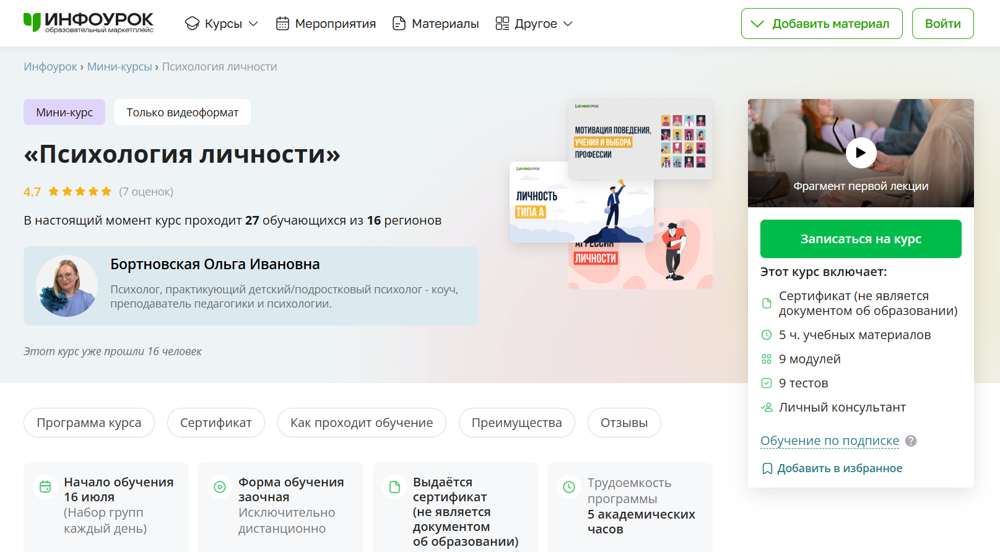- ✅ Официальный сайт: infourok.ru
- 💸 Цена обучения: по подписке - 699 ₽ в месяц, включена в тариф "Инфоурок.Курсы"
- 💳 Рассрочка: не требуется, доступ открыт сразу после оформления подписки
- 📚 Формат: дистанционный формат — видеоуроки, тесты, личный консультант
- ⏳ Продолжительность: 5 академических часов
- 📜 Документ: сертификат установленного образца (не является дипломом о профессиональном образовании)
- 📝 Трудоустройство: возможность применения знаний в профессиональной сфере и саморазвитии
- 🔷 Для кого подходит курс: специалисты в сфере психологии, рекрутинга, управления персоналом, а также все, кто интересуется личностным развитием
Особенности:
Курс полностью соответствует стандартам дистанционного образования и подходит для совмещения с работой. В процессе обучения слушатели получают теоретические знания и практические навыки в области психологии личности. Программа охватывает ключевые аспекты личностного поведения, мотивации, социальной адаптации и взаимодействия. Занятия проходят в удобном онлайн-формате, доступ открывается сразу после регистрации. После окончания обучения выдается сертификат, подтверждающий освоение программы. Слушатели изучают подходы к работе с агрессией, особенностями маскулинности и фемининности, а также коммуникативные навыки. Присоединиться можно в любой день — набор проводится ежедневно.
Чему учатся студенты:
- Анализировать мотивацию поведения и профессионального выбора
- Определять личностные типы и черты
- Работать с проявлениями агрессии
- Исследовать маскулинные и фемининные особенности
- Оценивать структуру и динамику личности
- Понимать роль личности в коммуникации и научном познании
Преподаватели:
- Бортновская Ольга Ивановна — практикующий детский/подростковый психолог, коуч, преподаватель педагогики и психологии
Преимущества:
- Обучение проходит в дистанционном формате без привязки ко времени
- Доступ к курсу предоставляется сразу после подписки без документов
- Курс подходит для всех уровней подготовки
- Выдается официальный сертификат установленного образца
- Минимальная стоимость за счёт высокого трафика платформы
- Постоянный набор учебных групп — каждый день
- Курс прошли уже десятки слушателей из разных регионов
- Возможность получить практическую подготовку в сфере психологии личности
Отзывы учеников:
Слушатели особенно ценят доступный формат, удобный график и насыщенность учебных материалов. Отмечают полезность полученных знаний для работы в сфере психологии, управления персоналом и личного развития. Положительные отзывы касаются также компетентности преподавателя и оперативной поддержки.
Перейти на официальный сайт курсаБесплатные курсы по обучению на специалиста психологии личности
- Курс проходит в дистанционном формате и не требует предварительной подготовки или специальных знаний.
- Слушатели получают базовые представления о теориях личности и методах психологического исследования.
- Занятия направлены на развитие практических навыков и понимание индивидуальных особенностей человека.
- Программа включает темы: гештальтпсихология, теория поля, возрастная психология, развитие личности по Леонтьеву и Божович.
- Формат обучения удобен — материалы доступны в любое время после регистрации.
- После прохождения курсов слушателям открывается доступ к другим дистанционным курсам в сфере психологии и практического консультирования.
- Образовательный процесс выстроен с учётом современных требований к дистанционному обучению и программам переподготовки.
- Курс полезен для тех, кто планирует получить профессиональные навыки в сфере психологического консультирования и диагностики.
- Программа способствует расширению теоретических знаний и формированию практического опыта в психологической практике.
Бесплатный онлайн-курс по психологии личности – Онлайн Академия «Карьера в кармане»
✅ Официальный сайт: academiait.ruОписание и особенности:
Что такое психология личности и зачем ее изучать?
Психология личности — это раздел психологии, изучающий индивидуальные особенности поведения, мотивации, мышления и эмоционального реагирования. Изучение этой дисциплины важно для формирования глубокого понимания структуры личности, что необходимо для работы в сфере психологии, психологического консультирования и практической психологии.
Какие программы обучения по психологии личности доступны в дистанционном формате?
Сейчас можно проходить обучение по психологии личности в формате дистанционного образования. Такие программы обучения включают дистанционные курсы, программы переподготовки и курсы повышения квалификации, адаптированные под дистанционный формат с использованием современных технологий и учебных материалов.
Можно ли пройти профессиональную переподготовку по психологии личности онлайн?
Да, профессиональную переподготовку по направлению «психология личности» можно пройти полностью онлайн. Программы переподготовки соответствуют профессиональным стандартам и позволяют получить дополнительную профессиональную квалификацию в удобном дистанционном режиме.
Какие знания и навыки получают студенты после окончания курсов?
После прохождения курсов слушатели получают теоретические знания по теориям личности, осваивают методы психологической диагностики, приобретают практические навыки взаимодействия с клиентами и опыт психологической практики в рамках учебных программ.
Какие методы психологического исследования изучаются в рамках курса?
Во время прохождения обучения студенты изучают методы психологической диагностики, наблюдение, интервью, анкетирование, тестирование, анализ поведения и другие методы исследования, применимые в различных сферах деятельности психолога.
Какие форматы обучения психологии личности доступны слушателям?
Форматы обучения могут быть очными, вечерними, заочными и дистанционными. Особенно популярен дистанционный формат, позволяющий совмещать обучение с работой или другими занятиями в любом удобном графике.
Что входит в программы дополнительного образования по психологии личности?
Программы дополнительного профессионального образования включают теоретическую подготовку, практические занятия, диагностические методики, психологическое консультирование и психологическую практику. Обучение направлено на формирование профессиональных навыков для работы в сфере психологии.
Кому подойдут дистанционные курсы по психологии личности?
Дистанционные курсы подходят как для начинающих, так и для действующих специалистов, желающих пройти профессиональную переподготовку или повышение квалификации. Также они удобны для тех, кто хочет сменить профессиональную сферу или получить <strongновые профессиональные навыки.
Какие документы выдаются после окончания обучения?
После завершения курса или прохождения переподготовки слушателям выдается диплом установленного образца, который подтверждает получение профессионального образования и дает право на ведение профессиональной деятельности в области психологии.
Как проходят занятия в дистанционном формате?
Занятия проходят в виде видеоуроков, вебинаров, интерактивных заданий, практикумов и самостоятельной работы с учебными материалами. Слушатели получают доступ к платформе с расписанием, заданиями и возможностью общения с преподавателями.
Можно ли совмещать обучение по психологии личности с работой?
Да, совмещать обучение с работой удобно благодаря гибкому графику, который предлагает дистанционный формат. Слушатели проходят курсы в удобное время, самостоятельно планируя процесс обучения.
Чему учат в рамках теоретического блока по психологии личности?
В рамках теории изучаются основные направления и теории личности, структура личности, психологические аспекты мотивации, характера и эмоций, формирование личности и индивидуальные особенности поведения.
Как выбрать подходящую программу переподготовки по психологии личности?
При выборе стоит учитывать формат обучения, длительность, стоимость, учебные материалы, отзывы, соответствие профессиональным стандартам и наличие диплома после окончания обучения.
Какие преимущества дает получение диплома по психологии личности?
Получение диплома по психологии личности открывает путь к работе в психологических центрах, социальных учреждениях, школах, компаниях, а также к частной практике в сфере психологического консультирования.
Можно ли получить практическую подготовку дистанционно?
Да, в дистанционном обучении предусмотрена практическая подготовка в форме кейсов, симуляций, онлайн-стажировок, работы с психологическими проблемами на примере клиентов. Это помогает развить практические навыки даже в удаленном формате.
Сколько длится обучение по психологии личности?
Сроки обучения зависят от программы: курсы повышения квалификации могут длиться от 1 до 3 месяцев, программы переподготовки — от 6 до 12 месяцев. Все зависит от учебного плана и формата обучения.
Какие профессии можно освоить после переподготовки?
После прохождения программы можно работать психологом-консультантом, специалистом по психологической диагностике, карьерным консультантом, тренером по развитию личности, преподавателем общей психологии или открыть психологическую практику.
Насколько востребованы специалисты по психологии личности?
Специалисты по психологии личности востребованы в образовательной сфере, бизнесе, HR, здравоохранении, центрах психологической помощи. Выпускники программы успешно устраиваются в различных сферах, где требуются знания о поведении и мотивации человека.
------------------------------------------------
Реклама. Информация о рекламодателе по ссылкам в статье.